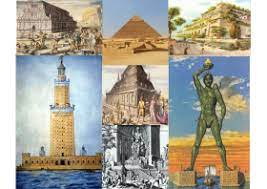
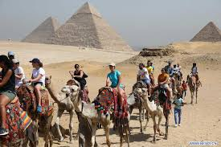
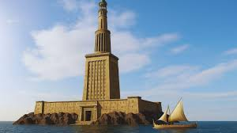
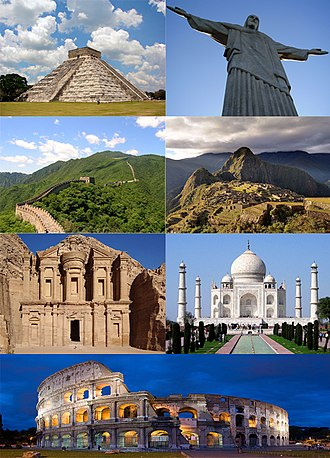
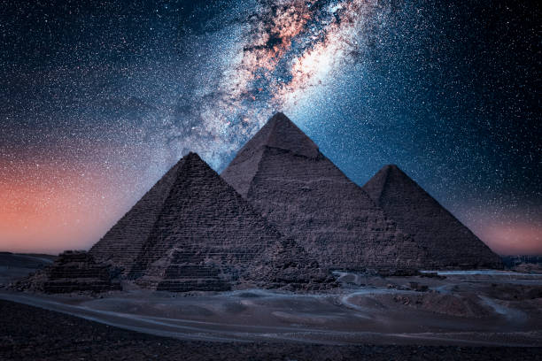

INSTITUTO TECNOLÓGICO DE TIJUANA
UNIDAD TOMAS AQUINO
Tijuana, B.C a 10 de septiembre de 2025
Carrera: ISC
Materia: Programación Web
Horario: 19-20 hrs
Laboratorio: D
Matrícula: 23211004
Alumno: Erick Corrales
Docente: José Jonathan Pérez Castro
Legado en la actualidad
Las 7 maravillas del mundo antiguo se convirtieron en un símbolo de la grandeza humana y en referencia obligada cuando se habla de arquitectura, arte e ingeniería. Sus historias siguen inspirando a escritores, artistas y cineastas en todo el mundo.
Aunque la mayoría desapareció, los lugares donde se encontraban las maravillas son hoy destinos turísticos y arqueológicos. Miles de personas visitan Éfeso, Olimpia, Rodas, Alejandría o Babilonia para conocer lo que queda de estas construcciones legendarias.
La arqueología y la tecnología han permitido reconstruir virtualmente las maravillas. A través de ilustraciones, maquetas y simulaciones 3D, hoy es posible imaginar cómo lucían en su esplendor. Esto ayuda a la educación y a mantener viva su memoria.
El concepto de “maravillas” se retomó en tiempos modernos. En 2007 se creó la lista de las Nuevas 7 maravillas del mundo, inspirada en la idea original de los griegos. Este legado demuestra cómo un listado antiguo influyó en la forma en que hoy valoramos el patrimonio mundial.
La Gran Pirámide de Giza, al ser la única sobreviviente, se ha convertido en un símbolo universal de permanencia. Representa el ingenio, la fe y la capacidad del ser humano de crear obras que desafían el tiempo. Su legado es la esperanza de que el conocimiento humano perdure.
